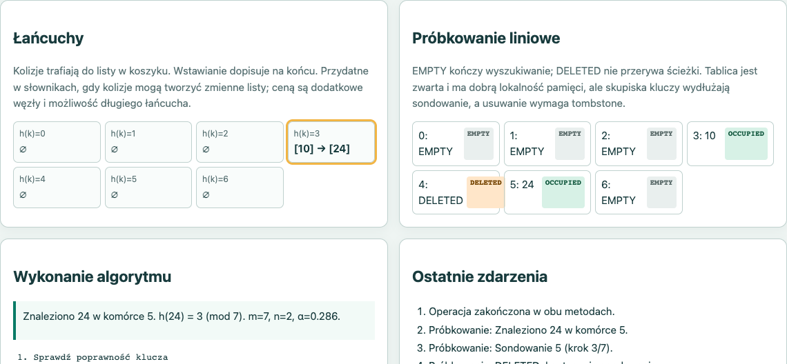

Aplikacja: Laboratorium haszowania
Autor: Daniel Zawisza
Numer indeksu: 93796
Przedmiot: Algorytmy i struktury danych I
Rok akademicki: 2026/2027
Data opracowania: 26 października 2026
Celem laboratorium jest porównanie dwóch sposobów rozwiązywania kolizji w tablicy haszującej. Użytkownik śledzi działanie algorytmów na tej samej historii, krok po kroku.
Klucze należą do zakresu 0–999, nie powtarzają się wśród aktywnych elementów, a ich liczba nie przekracza 20. Początkowe m=7. Przed skutecznym wstawieniem, jeśli (n+1)/m>0,7, rozmiar rośnie do 2m+1.
Przykład kontrolny: 10,17,24 mają wspólny indeks 3 przy m=7. Po usunięciu 17 komórka 4 pozostaje DELETED; wyszukiwanie 24 musi dojść do komórki 5.
Indeks bazowy wyznacza się jako k mod m. Klucz trafia do listy przypisanej do koszyka. Wyszukiwanie odwiedza węzły tej listy; usuwanie usuwa wyłącznie znaleziony element.
Dla kolizji sprawdzane są kolejne pozycje (h(k)+i) mod m, gdzie i=0…m−1. EMPTY kończy wyszukiwanie. DELETED nie kończy, bo dalszy element mógł zostać umieszczony za usuniętym kluczem.
Wstawianie zapamiętuje pierwszy DELETED, ale kontynuuje sprawdzanie, aby nie utworzyć duplikatu. Pętla nigdy nie przekracza m sondowań.
Po wzroście m tworzy się nową tablicę i ponownie oblicza pozycje wyłącznie aktywnych kluczy. Lista kolejności zachowuje pierwotną chronologię; usunięty i ponownie wstawiony klucz trafia na koniec kolejności.
Tablica m koszyków; koszyk przechowuje listę kluczy. Osobna lista `order` zachowuje kolejność rehashingu.
Pamięć O(m+n). Operacja średnio O(1+α) przy równomiernym haszowaniu; pesymistycznie O(n).
Tablica m komórek ze stanami EMPTY/OCCUPIED/DELETED i referencją aktywnego klucza.
Pamięć O(m), plus historia i widok. Operacje średnio krótkie przy małym zapełnieniu; pesymistycznie O(m) sondowań.
m — rozmiar; n — liczba aktywnych kluczy; α=n/m — współczynnik zapełnienia; home — h(k); probe — bieżący indeks; firstDeleted — pierwsza zapamiętana komórka DELETED; porównania i odwiedziny — liczniki operacji.
Wynik porównania obejmuje sumę liczników wykonanych wstawień, wyszukiwań i usunięcia. Liczba przeniesień w rehashingu jest raportowana osobno, podobnie jak liczba przebudów.
Interfejs: HTML5, CSS i czysty JavaScript. Brak bibliotek, CDN, płatnych API i połączenia sieciowego. Testy: Node.js, uruchomione lokalnie.
index.html — aplikacja.styles.css — układ i responsywny wygląd.js/algorithms.js — algorytmy i zdarzenia krokowe.js/app.js — sterowanie, scenariusze, renderowanie i porównanie.tests/tests.js — automatyczne testy; tests/compare.js — pomiary liczników.presentation.html — dokładnie 10 slajdów; documentation.html — źródło 10 stron.index.html w przeglądarce. Testy: w katalogu projektu uruchom node tests/tests.js. Porównanie: node tests/compare.js.Nie deklaruje się wspieranych przeglądarek ani zgodności z innymi wersjami Node, dopóki nie zostaną sprawdzone.
Obie instancje (`chain`, `linear`) otrzymują te same operacje. Każde kliknięcie „Krok” przesuwa oba generatory o jedno zdarzenie algorytmiczne. Start/Pauza wywołuje ten sam mechanizm z wybranym tempem.
Scenariusze: przykład kontrolny, zawijanie indeksów i przebudowa. Własna historia używa zapisów `+k` (wstaw), `-k` (usuń), `?k` (znajdź). Zmiana danych zatrzymuje przebieg i buduje nową kolejkę operacji.
Widok pokazuje m, n, α, indeks bazowy, komórki/węzły i linię pseudokodu powiązaną ze zdarzeniem. Wzrokowe wyróżnienie jest uzupełnione tekstem i etykietami stanów.
Historia zdarzeń i timer animacji są kosztami interfejsu, nie badanego algorytmu. Walidator testów i renderowanie nie wchodzą do liczników operacyjnych.
Użytkownik wybiera gotowy scenariusz albo wpisuje własną historię, a następnie uruchamia pojedynczy krok lub automatyczne odtwarzanie. Tempo ustala odstęp między krokami. Reset czyści stan obu metod.

Rys. 1. Wyszukiwanie 24 za DELETED po usunięciu 17. Rzeczywisty zrzut uruchomionej aplikacji, 26.10.2026.
Wykonano dwie historie: równomierne klucze 8,16,24,32 oraz kolizje 10,17,24,31. Każda zawiera cztery wstawienia, udane i nieudane wyszukiwanie (24 i 99) oraz usunięcie (odpowiednio 16 i 17). Start m=7.
| Dane | Metoda | Porównania | Odwiedziny | Rebuild / przeniesienia |
|---|---|---|---|---|
| Równomierne | Łańcuchy | 3 | 3 | 0 / 0 |
| Równomierne | Próbkowanie | 6 | 11 | 0 / 0 |
| Kolizje | Łańcuchy | 11 | 11 | 0 / 0 |
| Kolizje | Próbkowanie | 11 | 16 | 0 / 0 |
Liczniki po całej historii; końcowo n=3 i α=3/7≈0,429. Porównanie kluczy jest liczone przy spotkaniu aktywnego klucza. Puste komórki i DELETED to odwiedziny, nie porównania. Rehash nie wystąpił w tych historiach.
Interpretacja ogranicza się do tych deterministycznych wejść; nie jest pomiarem czasu ani dowodem ogólnej przewagi metody.
Raport wygenerowano po uruchomieniu `node tests/tests.js` w Node v20.20.2, 26.10.2026. Wynik: 14/14 PASS.
| Test | Sprawdzany wynik / stan pośredni | Status |
|---|---|---|
| Walidacja zakresu | 0 i 999 akceptowane; -1, 1000, ułamek i tekst odrzucone | PASS |
| Niepoprawne wstawienie | 1,5 odrzucone; n=0, m=7 bez zmian | PASS |
| Duplikat przed progiem | Duplikat przy n=4 nie uruchamia 7→15 | PASS |
| Operacje łańcuchów | 10,17,24; usunięcie 17; pozostają 10 i 24 | PASS |
| Przykład kontrolny | Komórki 3,4,5; DELETED; sukces find(24) | PASS |
| Stan pośredni find | Odwiedza DELETED=4, potem znajduje w 5 | PASS |
| Duplikat za DELETED | Pamięta 4, wykrywa 24 w 5, nie nadpisuje tombstone | PASS |
| Ponowne użycie DELETED | Sprawdza do EMPTY=6, wstawia w 4 | PASS |
| Zawijanie | Komórki 6,0,1 | PASS |
| Próg przebudowy | Piąte dodanie: 7→15, przenosi 4 wcześniejsze klucze | PASS |
| Kolejność rehashingu | 24,17,10,31 po ponownym dodaniu 10 | PASS |
| Brakujący klucz | Usunięcie 88 nie zmienia n | PASS |
| Limit | 20 dozwolone; 21. blokowane; po usunięciu można dodać | PASS |
| Obie metody | Ten sam m i n po przebudowie | PASS |
W toku prac pierwszy przebieg wykazał błąd składni generatora w rehashingu oraz nieprecyzyjne asercje. Poprawiono pętlę generatora i doprecyzowano testy. Po poprawkach wszystkie 14 testów przeszły. Pełny raport wejść, oczekiwań, wyników i statusów: tests/report.html oraz results/tests.json.
Implementacja ilustruje, że skutki kolizji zależą zarówno od metody rozwiązywania, jak i danych. W próbkowaniu DELETED jest częścią informacji o ścieżce, a przebudowa porządkuje tablicę i usuwa znaczniki usunięcia.
Autor projektu: Daniel Zawisza. Przy opracowaniu kodu, testów, wizualizacji i materiałów wykorzystano narzędzia AI: OpenClaw oraz Codex. Poprawność działania sprawdzono testami automatycznymi i kontrolą interfejsu; wyniki znajdują się w raportach dołączonych do projektu.
Źródło: Princeton, Algorithms, sekcja Hash Tables, https://algs4.cs.princeton.edu/34hash/ (link wskazany w karcie projektu).